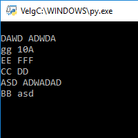
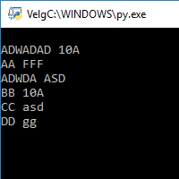
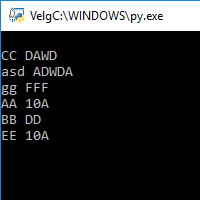
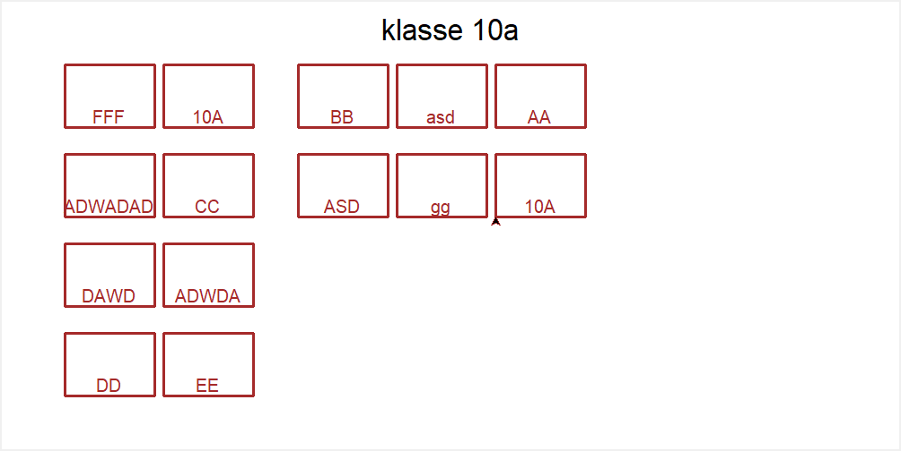
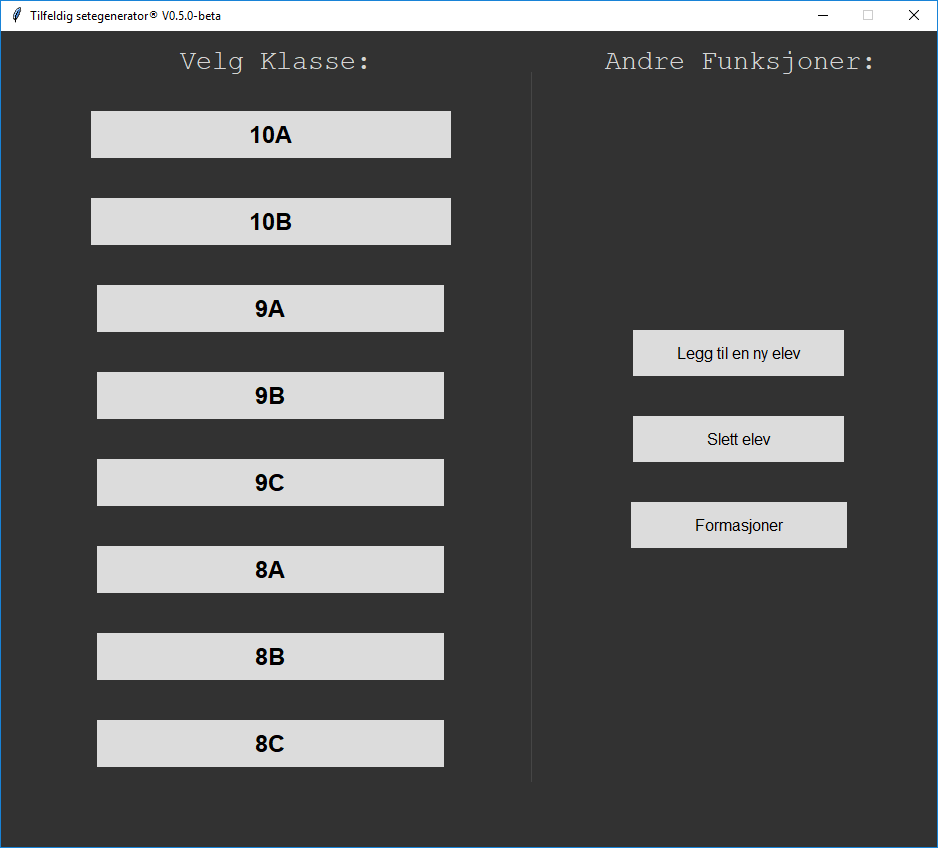

"Tilfeldig setegenerator" fra start til slutt
 13.05.2018 23:44
13.05.2018 23:44
Dette programmet på 962 linjer er endelig ferdig og klar til publisering. Programmet har jeg laget på fritiden min som et prosjekt ved siden av skole. Prosjektet tok meg ca. 2 måneder, fra ide til sluttprodukt. Det startet med et enkelt tekst-basert Python prosjekt vi gjorde i løpet av 2 skoletimer. Det gikk ut på å skrive ut to navn ved siden av hverandre på samme linje som skulle bestemme hvem som skal sitte ved siden av hverandre i klasserommet. Dette gjorde vi ved at vi skrev alle navnene i en liste, og deretter ba datamaskinen velge to tilfeldige navn og sette de ved siden av hverandre (Se bildene under).
  Dette var første gangen jeg hadde programmert i Python, og jeg fikk lyst til å programmere mer i det, og lære mer Python. Før jeg gikk hjem den tirsdagen fikk jeg i oppgave av læreren min om å klare å lage pulter grafisk og plassere navnene i pultene. I og med at det var første gangen jeg drev med Python, fant jeg en enkel løsning på det. Jeg opprettet en penn (som man kan tegne ulike ting med ved å skrive "penn.forward" og "penn.left" osv...). Jeg startet med å tegne en liten firkant, som skulle bli en pult. Deretter lagde jeg en funksjon som lagde like mange pulter som elever og plasserte ulike navn i ulike bokser(denne metoden brukes fortsatt i sluttproduktet) (Se bildet under).
Etter 3 uker hadde jeg fått på plass hovedfunksjonen. Jeg expanderte programmet ved å etterhvert få brukeren til å skrive inn klasse ("10b" eller "10a"), for å så få navn ut ifra en annen liste. Å skrive inn hvilken klasse du ville ha var en dårlig måte å gjøre det på, jeg trengte en meny. de neste ukene brukte jeg på få på plass en meny til programmet mitt ved bruk av bibliotekene "graphics" og "tkinter" (Se bildet under). meste parten av tiden min gikk på å lære seg begge libary'ene for å senere kunne bruke dem.
Etter at menyen var på plass, la jeg til funksjonen "legg til elev". Den funker ved at den lager en fil kalt "(klasse).txt". Hver gang programmet blander navn, legger den sammen navn fra listen og filen. Når du legger til nytt navn, legger programmet bare navnet til i ønsket fil (ved å velge klasse).